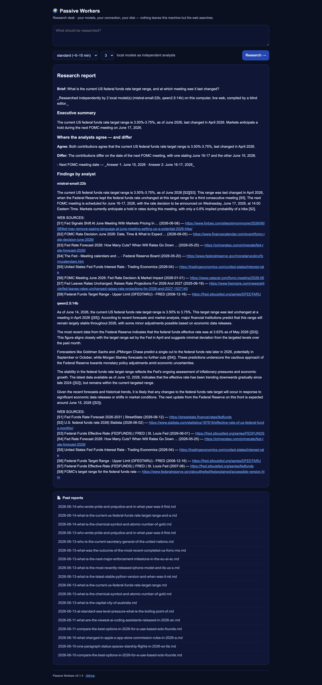
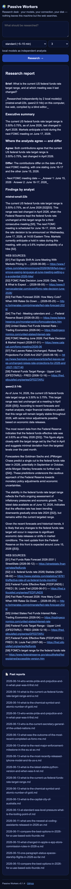
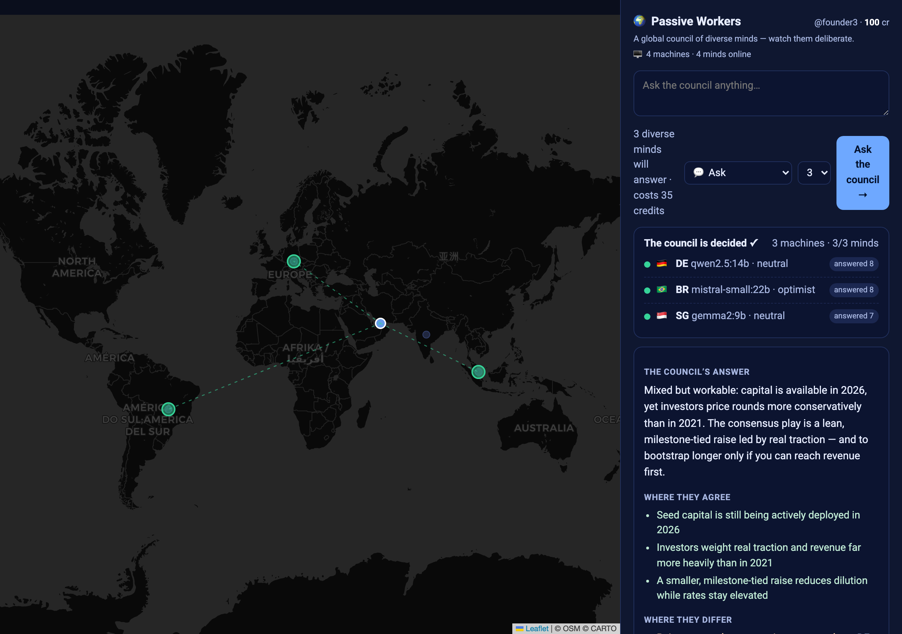

Private, current, cited research on your own computer — and an opt-in network of
computers doing that work for each other. Measured on real hardware, 2026-06-14.
+2.50 / +3.00
council beats a frontier model (live web vs memory) on recent / breaking questions
+0.00
…and ties on stable knowledge (the honest control)
100%
cited claims grounded in their sources (5/5 verifiable, 86% overlap)
$0
runs on your own models — no account, no per-query fee
Does it actually beat a frontier model? Only where it claims to.
Local council (live web) vs gpt-5-chat (answering from memory, no web by design),
scored 0–10 vs curated references — scripts/eval_currency_gap.py --run:
question type
council (live web)
frontier (memory)
gap
static — currency irrelevant (control)
10.00
10.00
+0.00 (tie)
recent
5.00
2.50
+2.50
breaking ⚠ (n=2)
4.00
1.00
+3.00
overall
6.80
5.20
+1.60
Honest read: the static tie is the point — a 14–22B local council does not
out-think a frontier model on stable knowledge. The win is currency, privacy, grounding, and
cost. Small samples (recent n=4, breaking n=2), LLM grader, one reference per question — a real
signal, not a league table. Full detail: BENEFIT.md.
See the real app
Screenshots of the live UI (Playwright, desktop + mobile). The research desk shows a
real generated report; the marketplace council answer is an illustrative seeded example;
the dashboard nodes/leaderboard are seeded demo data.
Research desk — a real, cited, current report

Desktop — live web report with [S#] citations

Mobile — responsive
Marketplace — a global council deliberating

Desktop — live map, consensus & disagreement preserved